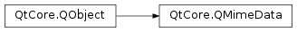

QMimeData¶
Synopsis¶
Functions¶
- def
clear() - def
colorData() - def
data(mimetype) - def
hasColor() - def
hasHtml() - def
hasImage() - def
hasText() - def
hasUrls() - def
html() - def
imageData() - def
removeFormat(mimetype) - def
setColorData(color) - def
setData(mimetype, data) - def
setHtml(html) - def
setImageData(image) - def
setText(text) - def
setUrls(urls) - def
text() - def
urls()
Virtual functions¶
- def
formats() - def
hasFormat(mimetype) - def
retrieveData(mimetype, preferredType)
Detailed Description¶
The
PySide2.QtCore.QMimeDataclass provides a container for data that records information about its MIME type.
PySide2.QtCore.QMimeDatais used to describe information that can be stored in theclipboard, and transferred via the drag and drop mechanism.PySide2.QtCore.QMimeDataobjects associate the data that they hold with the corresponding MIME types to ensure that information can be safely transferred between applications, and copied around within the same application.
PySide2.QtCore.QMimeDataobjects are usually created usingnewand supplied toPySide2.QtGui.QDragorPySide2.QtGui.QClipboardobjects. This is to enable Qt to manage the memory that they use.A single
PySide2.QtCore.QMimeDataobject can store the same data using several different formats at the same time. ThePySide2.QtCore.QMimeData.formats()function returns a list of the available formats in order of preference. ThePySide2.QtCore.QMimeData.data()function returns the raw data associated with a MIME type, andPySide2.QtCore.QMimeData.setData()allows you to set the data for a MIME type.For the most common MIME types,
PySide2.QtCore.QMimeDataprovides convenience functions to access the data:For example, if your write a widget that accepts URL drags, you would end up writing code like this:
def dragEnterEvent(self, event): if event.mimeData().hasUrls(): event.acceptProposedAction() def dropEvent(self, event): if event->mimeData().hasUrls(): for url in event.mimeData().urls(): ...There are three approaches for storing custom data in a
PySide2.QtCore.QMimeDataobject:
Custom data can be stored directly in a
PySide2.QtCore.QMimeDataobject as aPySide2.QtCore.QByteArrayusingPySide2.QtCore.QMimeData.setData(). For example:csvData = QByteArray(...) mimeData = QMimeData() mimeData.setData("text/csv", csvData)We can subclass
PySide2.QtCore.QMimeDataand reimplementPySide2.QtCore.QMimeData.hasFormat(),PySide2.QtCore.QMimeData.formats(), andPySide2.QtCore.QMimeData.retrieveData().If the drag and drop operation occurs within a single application, we can subclass
PySide2.QtCore.QMimeDataand add extra data in it, and use aqobject_cast()in the receiver’s drop event handler. For example:def dropEvent(self, event): myData = event->mimeData() if myData: # access myData's data directly (not through QMimeData's API) }
Platform-Specific MIME Types¶
On Windows,
PySide2.QtCore.QMimeData.formats()will also return custom formats available in the MIME data, using thex-qt-windows-mimesubtype to indicate that they represent data in non-standard formats. The formats will take the following form:application/x-qt-windows-mime;value="<custom type>"The following are examples of custom MIME types:
application/x-qt-windows-mime;value="FileGroupDescriptor" application/x-qt-windows-mime;value="FileContents"The
valuedeclaration of each format describes the way in which the data is encoded.In some cases (e.g. dropping multiple email attachments), multiple data values are available. They can be accessed by adding an
indexvalue:application/x-qt-windows-mime;value="FileContents";index=0 application/x-qt-windows-mime;value="FileContents";index=1On Windows, the MIME format does not always map directly to the clipboard formats. Qt provides QWinMime to map clipboard formats to open-standard MIME formats. Similarly, the QMacPasteboardMime maps MIME to Mac flavors.
See also
PySide2.QtGui.QClipboardPySide2.QtGui.QDragEnterEventPySide2.QtGui.QDragMoveEventPySide2.QtGui.QDropEventPySide2.QtGui.QDragDrag and Drop
-
class
PySide2.QtCore.QMimeData¶ Constructs a new MIME data object with no data in it.
-
PySide2.QtCore.QMimeData.clear()¶ Removes all the MIME type and data entries in the object.
-
PySide2.QtCore.QMimeData.colorData()¶ Return type: object Returns a color if the data stored in the object represents a color (MIME type
application/x-color); otherwise returns a null variant.A
PySide2.QtCore.QVariantis used becausePySide2.QtCore.QMimeDatabelongs to the Qt Core module, whereasPySide2.QtGui.QColorbelongs to Qt GUI. To convert thePySide2.QtCore.QVariantto aPySide2.QtGui.QColor, simply useqvariant_cast(). For example:if event.mimeData().hasColor(): color = QColor(event.mimeData().colorData()) ...
-
PySide2.QtCore.QMimeData.data(mimetype)¶ Parameters: mimetype – unicode Return type: PySide2.QtCore.QByteArrayReturns the data stored in the object in the format described by the MIME type specified by
mimeType.See also
-
PySide2.QtCore.QMimeData.formats()¶ Return type: list of strings Returns a list of formats supported by the object. This is a list of MIME types for which the object can return suitable data. The formats in the list are in a priority order.
For the most common types of data, you can call the higher-level functions
PySide2.QtCore.QMimeData.hasText(),PySide2.QtCore.QMimeData.hasHtml(),PySide2.QtCore.QMimeData.hasUrls(),PySide2.QtCore.QMimeData.hasImage(), andPySide2.QtCore.QMimeData.hasColor()instead.
-
PySide2.QtCore.QMimeData.hasColor()¶ Return type: PySide2.QtCore.boolReturns
trueif the object can return a color (MIME typeapplication/x-color); otherwise returnsfalse.
-
PySide2.QtCore.QMimeData.hasFormat(mimetype)¶ Parameters: mimetype – unicode Return type: PySide2.QtCore.boolReturns
trueif the object can return data for the MIME type specified bymimeType; otherwise returnsfalse.For the most common types of data, you can call the higher-level functions
PySide2.QtCore.QMimeData.hasText(),PySide2.QtCore.QMimeData.hasHtml(),PySide2.QtCore.QMimeData.hasUrls(),PySide2.QtCore.QMimeData.hasImage(), andPySide2.QtCore.QMimeData.hasColor()instead.
-
PySide2.QtCore.QMimeData.hasHtml()¶ Return type: PySide2.QtCore.boolReturns
trueif the object can return HTML (MIME typetext/html); otherwise returnsfalse.
-
PySide2.QtCore.QMimeData.hasImage()¶ Return type: PySide2.QtCore.boolReturns
trueif the object can return an image; otherwise returns false.
-
PySide2.QtCore.QMimeData.hasText()¶ Return type: PySide2.QtCore.boolReturns
trueif the object can return plain text (MIME typetext/plain); otherwise returnsfalse.
-
PySide2.QtCore.QMimeData.hasUrls()¶ Return type: PySide2.QtCore.boolReturns
trueif the object can return a list of urls; otherwise returnsfalse.URLs correspond to the MIME type
text/uri-list.
-
PySide2.QtCore.QMimeData.html()¶ Return type: unicode Returns a string if the data stored in the object is HTML (MIME type
text/html); otherwise returns an empty string.
-
PySide2.QtCore.QMimeData.imageData()¶ Return type: object Returns a
PySide2.QtCore.QVariantstoring aPySide2.QtGui.QImageif the object can return an image; otherwise returns a null variant.A
PySide2.QtCore.QVariantis used becausePySide2.QtCore.QMimeDatabelongs to the Qt Core module, whereasPySide2.QtGui.QImagebelongs to Qt GUI. To convert thePySide2.QtCore.QVariantto aPySide2.QtGui.QImage, simply useqvariant_cast(). For example:if event.mimeData().hasImage(): image = QImage(event.mimeData().imageData()) ...
-
PySide2.QtCore.QMimeData.removeFormat(mimetype)¶ Parameters: mimetype – unicode Removes the data entry for
mimeTypein the object.
-
PySide2.QtCore.QMimeData.retrieveData(mimetype, preferredType)¶ Parameters: - mimetype – unicode
- preferredType –
PySide2.QtCore.QVariant::Type
Return type: Returns a variant with the given
typecontaining data for the MIME type specified bymimeType. If the object does not support the MIME type or variant type given, a null variant is returned instead.This function is called by the general
PySide2.QtCore.QMimeData.data()getter and by the convenience getters (PySide2.QtCore.QMimeData.text(),PySide2.QtCore.QMimeData.html(),PySide2.QtCore.QMimeData.urls(),PySide2.QtCore.QMimeData.imageData(), andPySide2.QtCore.QMimeData.colorData()). You can reimplement it if you want to store your data using a custom data structure (instead of aPySide2.QtCore.QByteArray, which is whatPySide2.QtCore.QMimeData.setData()provides). You would then also need to reimplementPySide2.QtCore.QMimeData.hasFormat()andPySide2.QtCore.QMimeData.formats().See also
-
PySide2.QtCore.QMimeData.setColorData(color)¶ Parameters: color – object Sets the color data in the object to the given
color.Colors correspond to the MIME type
application/x-color.
-
PySide2.QtCore.QMimeData.setData(mimetype, data)¶ Parameters: - mimetype – unicode
- data –
PySide2.QtCore.QByteArray
Sets the data associated with the MIME type given by
mimeTypeto the specifieddata.For the most common types of data, you can call the higher-level functions
PySide2.QtCore.QMimeData.setText(),PySide2.QtCore.QMimeData.setHtml(),PySide2.QtCore.QMimeData.setUrls(),PySide2.QtCore.QMimeData.setImageData(), andPySide2.QtCore.QMimeData.setColorData()instead.Note that if you want to use a custom data type in an item view drag and drop operation, you must register it as a Qt
meta type, using theQ_DECLARE_METATYPE()macro, and implement stream operators for it. The stream operators must then be registered with theqRegisterMetaTypeStreamOperators()function.See also
PySide2.QtCore.QMimeData.data()PySide2.QtCore.QMimeData.hasFormat()QMetaTypeQMetaType.qRegisterMetaTypeStreamOperators()
-
PySide2.QtCore.QMimeData.setHtml(html)¶ Parameters: html – unicode Sets
htmlas the HTML (MIME typetext/html) used to represent the data.
-
PySide2.QtCore.QMimeData.setImageData(image)¶ Parameters: image – object Sets the data in the object to the given
image.A
PySide2.QtCore.QVariantis used becausePySide2.QtCore.QMimeDatabelongs to the Qt Core module, whereasPySide2.QtGui.QImagebelongs to Qt GUI. The conversion fromPySide2.QtGui.QImagetoPySide2.QtCore.QVariantis implicit. For example:mimeData.setImageData(QImage("beautifulfjord.png"))
-
PySide2.QtCore.QMimeData.setText(text)¶ Parameters: text – unicode Sets
textas the plain text (MIME typetext/plain) used to represent the data.
-
PySide2.QtCore.QMimeData.setUrls(urls)¶ Parameters: urls – Sets the URLs stored in the MIME data object to those specified by
urls.URLs correspond to the MIME type
text/uri-list.Since Qt 5.0, also exports the urls as plain text, if
PySide2.QtCore.QMimeData.setText()was not called before, to make it possible to drop them into any lineedit and text editor.
-
PySide2.QtCore.QMimeData.text()¶ Return type: unicode Returns a plain text (MIME type
text/plain) representation of the data.
-
PySide2.QtCore.QMimeData.urls()¶ Return type: Returns a list of URLs contained within the MIME data object.
URLs correspond to the MIME type
text/uri-list.
© 2018 The Qt Company Ltd. Documentation contributions included herein are the copyrights of their respective owners. The documentation provided herein is licensed under the terms of the GNU Free Documentation License version 1.3 as published by the Free Software Foundation. Qt and respective logos are trademarks of The Qt Company Ltd. in Finland and/or other countries worldwide. All other trademarks are property of their respective owners.